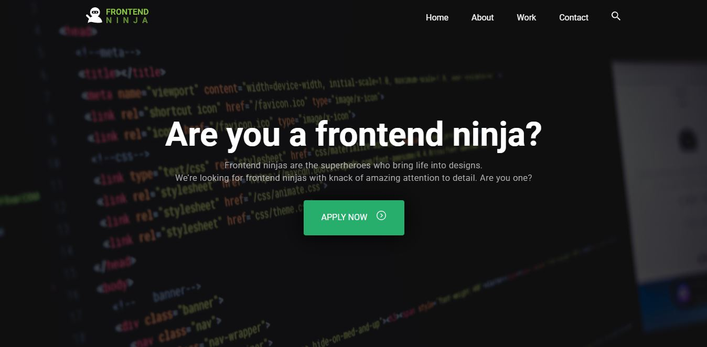

Responsive Site
There was a challenge provided by YIPL to create a responsive front-end.The objective was to recreate the site as close as possible and to make it responsive. We were provided a sample of how the site should look in desktop view.
Created Using:
HTML, CSS, JS

September, 2020